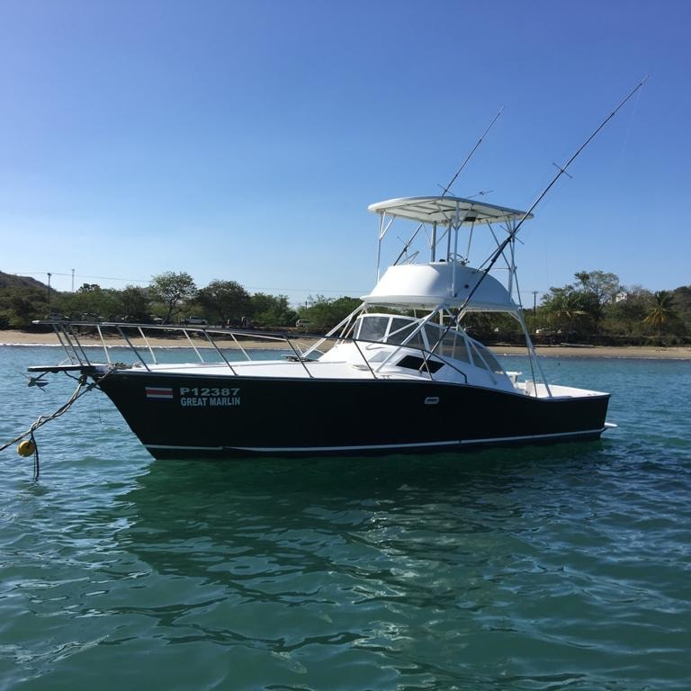

The boat has a fleet.
Great Marlin is partnered with Jacó Transport — a licensed ground company working this coast every day. Land at SJO and every ride of the trip sits on the same booking thread as the boat: airport to your door, door to the dock at dawn, and anywhere else the week wants to go.
The Partner
Boat and wheel
Every charter on this coast tells you to get yourself to the marina. This one can come and get you.
Jacó Transport is a real, licensed ground transport company running the SJO–Jacó–Herradura corridor — private vehicles, drivers who do this road for a living. It is our transport partner, and the arrangement is simple: the thread that books your charter can book every ride around it.
That matters for one reason: your whole day answers to one plan. The driver who takes you to the dock for the quarter-to-seven meet and the crew waiting on the boat are working the same schedule. If a flight slips, the boat knows. If the seas move a departure, the car knows.
What you will not find here is a rate card. Transport prices are Jacó Transport's to quote, and a number copied onto a fishing site is a number that goes stale. Ask in the same message as your dates — the answer comes back fast.
Nothing to rent, nothing to park, nothing to solve at midnight.
One WhatsApp thread runs the boat, the cars and the week.
What Gets Handled
All of it, if you want
- The airport run SJO → Herradura or Jacó · ~90 minutes You are met at arrivals and you are on the coast in about ninety minutes, door to door. Nothing to sign at a rental counter after a long flight. The honest guide to that drive — including the other ways to do it — is its own page.
- The dawn dock run The seven o'clock problem, solved You are due at the marina at quarter to seven. Nobody enjoys parking a rental in the early light at a marina with two hundred and one slips that all look the same. You are dropped at the boat with the coffee still warm, and picked up when you are back with daylight left.
- Around town Dinners · nights out · short hops Jacó for dinner, back to Herradura after. Somebody sober drives, nobody counts drinks against a mountain road, and the evening ends when you want it to instead of when the parking does.
- The far days Waterfalls · parks · the rest of the coast On the days you are not fishing, the same cars run day trips — national parks, waterfalls, whatever the week is building toward. Pair this with the tours page and the whole itinerary rides on one plan.
How It Works
Three messages, no forms
-
[ 01 ]
Book the boat
Dates first. The fishing days are the fixed points of the week and everything else gets built around them.
-
[ 02 ]
Send the flight
Drop your flight number in the same WhatsApp thread. The pickup gets built around the plane, not the other way round — and a private car does not leave without you when the plane is late.
-
[ 03 ]
Get met
Arrivals hall to your door. Door to the dock at dawn. Dock to dinner. However much of the trip you hand over, that part stops being your problem.
And if you would rather drive yourself, drive yourself — the rental option is laid out honestly in the getting-here guide, including the reasons you might want it. The cars are an offer, not a condition.
Land. The rest is handled.
Send dates and a flight number. Answers come fast — boat, car, week.